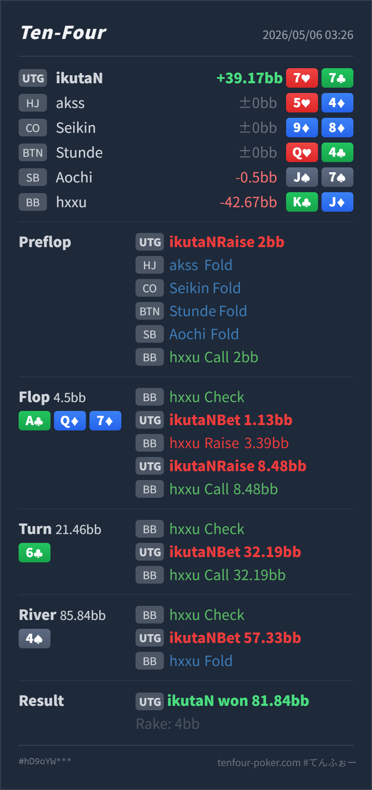

Preflop
良い7♥7♣ はUTG openとして十分です。
GTO基準では、preflop、flopの3bet、turnの大きいvalue、river shoveまで大筋で良いです。
7♥ 7♣K♣ J♦A♣ Q♦ 7♦ / 6♣ / 4♠7♥7♣7♦A♣Q♦ です。上には AA/QQ の上位set、85/53 のstraightがあります。7♥ 7♣K♣ J♦2BB, HJ fold, CO fold, BTN fold, SB fold, BB callA♣ Q♦ 7♦ / 6♣ / 4♠4.5BB, BB check, UTG Hero bet 1.13BB, BB raise 3.39BB, UTG Hero raise 8.48BB, BB call21.46BB, BB check, UTG Hero bet 32.19BB, BB call85.84BB, BB check, UTG Hero bet 57.33BB, BB fold81.84BB, rake 4BB
良い7♥7♣ はUTG openとして十分です。
A♣ Q♦ 7♦良い
Heroはbottom setで非常に強いvalue handです。ただし AA/QQ には負けます。
6♣良い
Heroのsetは引き続き強いvalueです。
4♠良い寄り
Heroは 7♥7♣7♦A♣Q♦ のsetで、nutsではありませんがかなり強いvalue handです。
| 論点 | その場で置いた見立て | どこがズレやすいか | 次回の基準 |
|---|---|---|---|
| flop setへのcheck-raise対応 | bottom setなので強いが、相手のraiseも強そうでcallに留めたくなる | AQ7 two-tone はdrawが多く、BBのraiseにはdiamond draw、KJ/JT系、A7/Q7、setが混ざります。callだけだとturn以降の悪いカードが多く、valueも逃しやすいです。 | drawが多いA-high boardでsetを持ったら、raiseに対して3betでpotを作る候補を強く持つ |
| river straight完成カード | river 4♠ は低いカードなので安全に見える | 85/53 はstraightになります。Heroのsetは強いですが、絶対nutsではありません。とはいえSPRが低く、BBのrangeにはtwo pair、下のset、強いAx、missed drawも残ります。 | riverの低い連結カードは5枚役を列挙する。そのうえで、worseが十分残る低SPRなら打ち切る |
| ストリート | その時点の見え方 | 実ハンドの位置づけ | 評価 | その場の一手 |
|---|---|---|---|---|
| Preflop | UTG の 2BB open は基準サイズです。pocket pair はopen rangeに自然に入り、callされた時もset valueがあります。 | 7♥7♣ はUTG openとして十分です。 | 良い | openで問題ありません。 |
Flop A♣ Q♦ 7♦ | UTG は AA/QQ/AQ/AK を多く持つ一方、BBもtwo pair、set、diamond draw、broadway drawを持てます。BBのcheck-raiseは強いvalueとdrawが混ざる構造です。 | Heroはbottom setで非常に強いvalue handです。ただし AA/QQ には負けます。 | 良い | small c-bet後、check-raiseに3betしたのは良いです。drawに価格をつけ、A7/Q7や強いdrawからvalueを取れます。 |
Turn 6♣ | T9/98/85/65 方面のdrawが増え、diamond drawも残ります。BBがflop 3betにcallした後なので、rangeはかなり濃いですが、drawもまだ多いです。 | Heroのsetは引き続き強いvalueです。 | 良い | 32.19BB のoverbetは良いです。riverのSPRを下げ、drawとtwo pairに最大圧をかけられます。 |
River 4♠ | 85/53 はstraightを完成します。一方、BBにはflop/turnで粘ったtwo pair、下のset、強いAx、missed diamond / broadway drawも残ります。 | Heroは 7♥7♣7♦A♣Q♦ のsetで、nutsではありませんがかなり強いvalue handです。 | 良い寄り | effective stackが 57.33BB でpotに対して小さく、turnで打ち切る形を作れています。ここはcheckで取り逃すより、worseに払わせる shove が良いです。 |
4♠ は低いカードですが、85/53 のstraight完成カードです。低いカードをblank扱いする前に、必ず5枚役を列挙します。K♣J♦ で、flop check-raise、flop 3bet call、turn overbet call まで進んでいます。このタイプには、set以上のvalue handでかなり強く打ち切ってよいです。